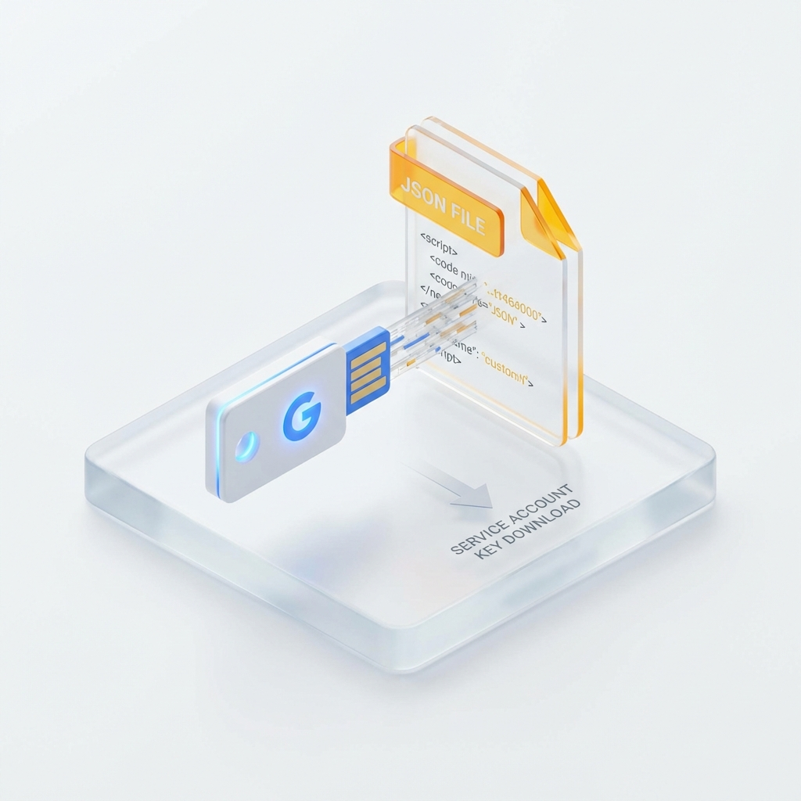

구글 API 및 서비스 계정 설정 가이드
다양한 애플리케이션 및 자동화 도구에서 구글 서비스(Sheets, Drive 등)를 연동하기 위한 Google Cloud 프로젝트 설정과 서비스 계정(JSON 키) 발급 절차를 안내합니다.
1
구글 클라우드 프로젝트 생성
-
01.
구글 클라우드 콘솔에 접속하여 로그인합니다.
-
02.
왼쪽 상단의 프로젝트 선택 메뉴를 클릭한 후 [새 프로젝트]를 선택합니다.
-
03.
원하는 프로젝트 이름을 입력하고 [만들기] 버튼을 클릭합니다.
2
필요한 API 활성화
-
01.
좌측 메뉴의 [API 및 서비스] > [라이브러리]로 이동합니다.
-
02.
사용하려는 서비스(예:
Google Sheets API, Google Drive API)를 검색합니다.
-
03.
해당 API를 클릭한 후 [사용] 버튼을 눌러 활성화합니다.
3
서비스 계정 생성 및 키 발급
-
01.
좌측 메뉴에서 [IAM 및 관리자] > [서비스 계정]으로 이동합니다.
-
02.
상단의 [+ 서비스 계정 만들기]를 클릭하고 계정 정보를 입력합니다.
-
03.
생성된 계정의 이메일 주소를 클릭한 후 [키] 탭에서 [새 키 만들기]를 선택합니다.
-
04.
키 유형을 JSON으로 설정하여 다운로드합니다. 이 파일이 인증 키가 됩니다.

🤝 중요: 스프레드시트 공유 설정
서비스 계정은 일반 구글 계정과 같습니다. 연동할 스프레드시트나 구글 드라이브 폴더의 [공유] 버튼을 누르고, 발급받은 서비스 계정의 이메일
주소(예: bot-name@project.iam.gserviceaccount.com)를 추가하여 편집자 권한을
부여해야 정상적으로 작동합니다.
🚀 설정 완료 및 활용
환경 설정 및 보안
- 인증 파일(JSON)의 이름을 프로그램이 요구하는 이름으로 변경하여 설정 폴더에 배치합니다.
- 보안 주의: 인증 키 파일은 비밀번호와 같습니다. GitHub 등 오픈소스에 업로드되지 않도록
주의하세요.
연동 지원 기능
- 구글 시트 데이터 읽기/쓰기
- 구글 드라이브 파일 업로드/다운로드
- 구글 캘린더 일정 관리 자동화 등
더 궁금한 점이 있으신가요?
API 활용 사례와 다양한 디지털 실무 도구들을 확인해 보세요.